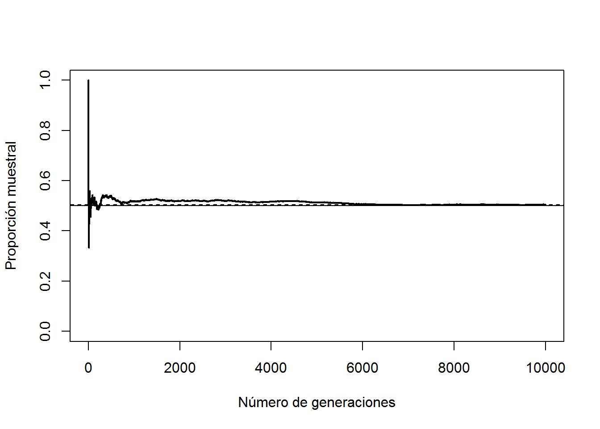
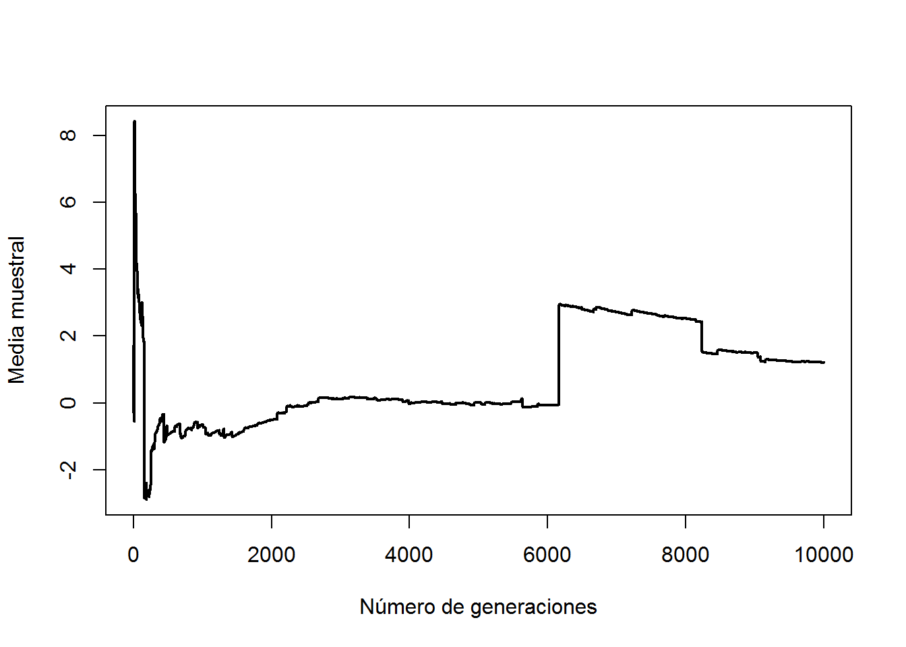
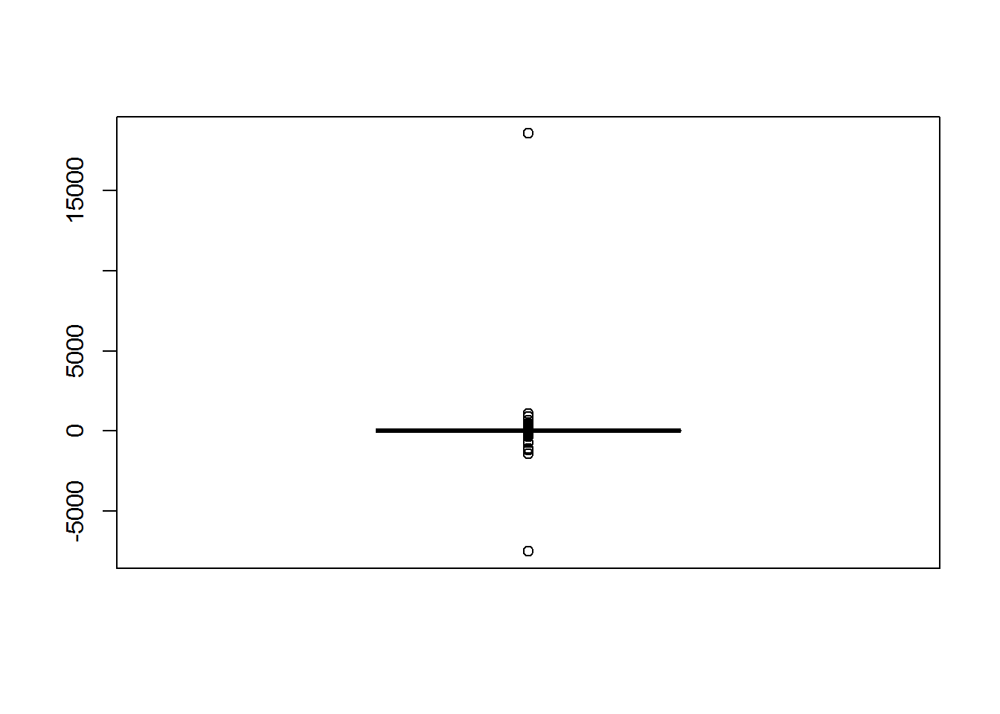
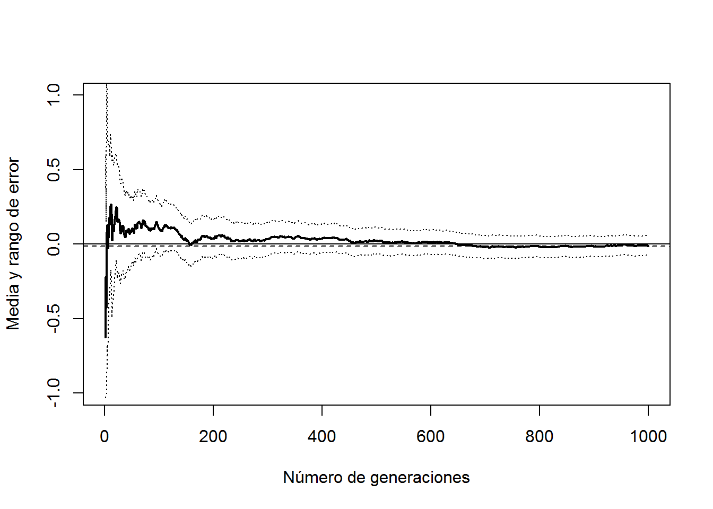
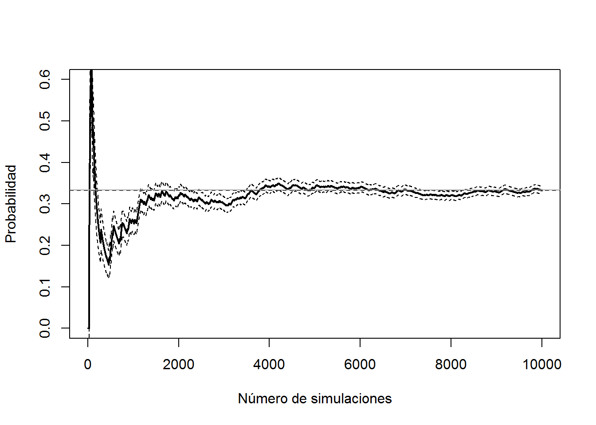
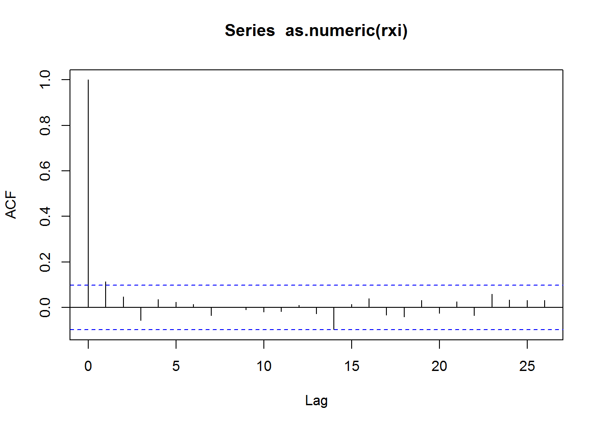
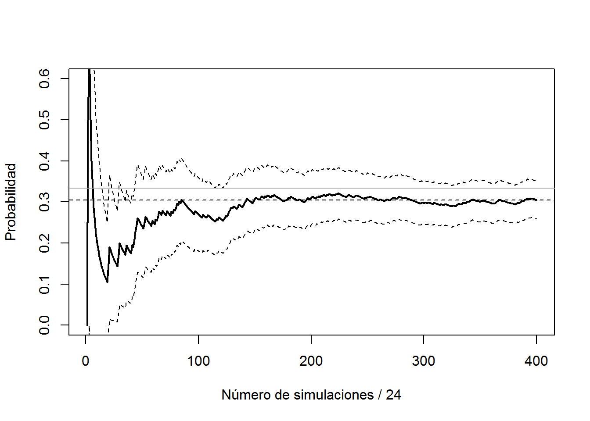
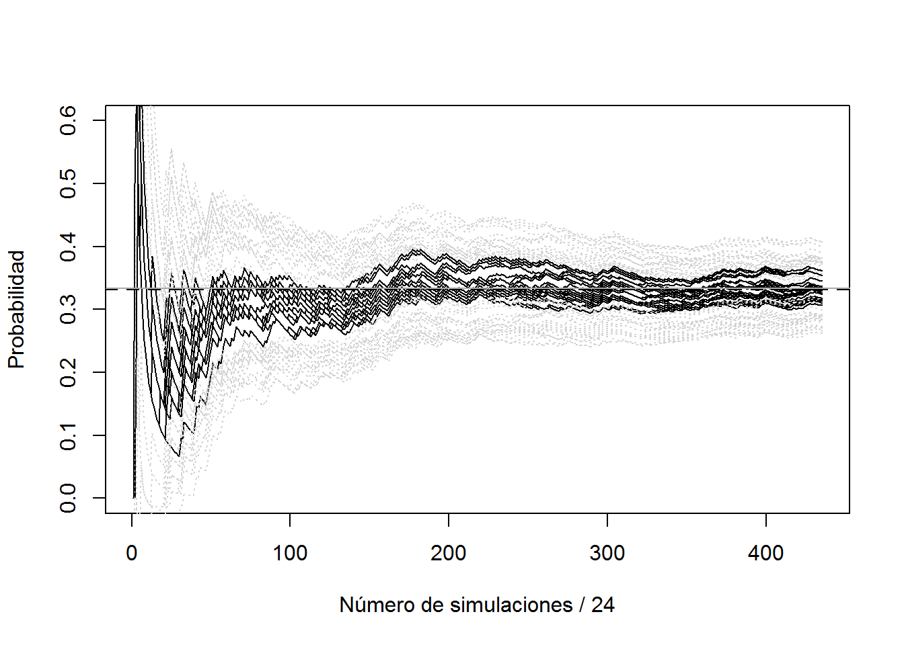

Capítulo 4 Análisis de los resultados
4.1 Convergencia
Supongamos que estamos interesados en aproximar la media teórica \(E\left( X\right)\) a partir de una secuencia i.i.d. \(X_{1}\), \(X_{2}\), \(\cdots\), \(X_{n}\) mediante la media muestral \(\bar{X}_{n}\) (probabilidad caso particular). Una justificación teórica de la validez de la aproximación obtenida mediante simulación es la ley (débil) de los grandes números:
Si \(X_{1}\), \(X_{2}\), \(\cdots\) es una secuencia de v.a.’s independientes con: \[E\left( X_{i}\right) =\mu \text{ y }Var\left( X_{i}\right) =\sigma^{2}<\infty,\] entonces \(\overline{X}_{n}=\left( X_{1}+\cdots +X_{n}\right) /n\) converge en probabilidad a \(\mu\). i.e. para cualquier \(\varepsilon >0\): \[\lim\limits_{n\rightarrow \infty }P\left( \left\vert \overline{X}_{n}-\mu \right\vert <\varepsilon \right) = 1.\]
La ley fuerte establece la convergencia casi segura.
Ejemplo: Aproximación de una probabilidad
p <- 0.5
set.seed(1)
nsim <- 10000
rx <- runif(nsim) <= p
# Aproximación por simulación de p
mean(rx) ## [1] 0.5047# Evolución de la aproximación
plot(cumsum(rx)/1:nsim, type="l", lwd=2, xlab="Número de generaciones",
ylab="Proporción muestral", ylim=c(0,1))
abline(h = mean(rx), lty = 2)
# valor teórico
abline(h = p) 
Una suposición crucial es que las variables \(X_{i}\) deben tener varianza finita (realmente esta suposición puede relajarse: \(E\left( \left\vert X_{i} \right\vert \right) < \infty\)). En caso contrario la media muestral puede no converger a una constante. Un ejemplo conocido es la distribución de Cauchy:
# Problemas convergencia
set.seed(1)
nsim <- 10000
rx <- rcauchy(nsim)
plot(cumsum(rx)/1:nsim, type="l", lwd=2,
xlab="Número de generaciones", ylab="Media muestral")
Es recomendable representar la evolución de la aproximación de la característica de interés (sobre el número de generaciones) para detectar problemas de convergencia. Además del análisis dewscriptivo de las simulaciones:
boxplot(rx)
4.2 Estimación de la precisión
En el caso de la media muestral \(\overline{X}_{n}\), un estimador insesgado de \(Var\left( \overline{X}_{n}\right) =\sigma ^{2}/n\) es: \[\widehat{Var}\left( \overline{X}_{n}\right) =\frac{\widehat{S}^{2}}{n}\] con: \[\widehat{S}_{n}^{2}=\dfrac{1}{n-1}\sum\limits_{i=1}^{n}\left( X_{i}- \overline{X}\right) ^{2}.\]
En el caso de una proporción \(\hat{p}_{n}\): \[\widehat{Var}\left( \hat{p}_{n}\right) =\frac{\hat{p}_{n}(1-\hat{p}_{n})}{n-1}.\]
Los valores obtenidos servirían como medidas básicas de la precisión de la aproximación, aunque su principal aplicación es la construcción de intervalos de confianza.
4.3 Teorema central del límite
Si \(X_{1}\), \(X_{2}\), \(\cdots\) es una secuencia de v.a.’s independientes con \(E\left( X_{i}\right) =\mu\) y \(Var\left( X_{i}\right) = \sigma ^{2}<\infty\), entonces: \[Z_{n}=\frac{\overline{X}_{n}-\mu }{\frac{\sigma }{\sqrt{n}}} \overset{d}{ \rightarrow } N(0,1)\] i.e. \(\lim\limits_{n\rightarrow \infty }F_{Z_{n}}(z)=\Phi (z)\). Por tanto, un intervalo de confianza asintótico para \(\mu\) es: \[IC_{1-\alpha }(\mu ) = \left( \overline{X}_{n} - z_{1-\alpha /2}\dfrac{\widehat{S}_{n}}{\sqrt{n}},\ \overline{X}+z_{1-\alpha /2}\dfrac{\widehat{S}_{n}}{\sqrt{n}} \right).\]
Podemos considerar que \(z_{1-\alpha /2}\dfrac{\widehat{S}_{n}}{\sqrt{n}}\) es la precisión obtenida (con nivel de confianza \(1-\alpha\)).
# Teorema central del límite
xsd <- 1
xmed <- 0
set.seed(1)
nsim <- 1000
rx <- rnorm(nsim, xmed, xsd)
# Aproximación por simulación de la media
mean(rx)## [1] -0.01164814# "Error" de la aproximación
2*sd(rx)/sqrt(nsim)## [1] 0.06545382# Evolución de la aproximación
n <- 1:nsim
est <- cumsum(rx)/n
esterr <- sqrt(cumsum((rx-est)^2))/(n - 1) # Error estandar
plot(est, type="l", lwd=2, xlab="Número de generaciones",
ylab="Media y rango de error", ylim=c(-1,1))
abline(h = est[nsim], lty=2)
lines(est + 2*esterr, lty=3)
lines(est - 2*esterr, lty=3)
abline(h = xmed)
4.4 Determinación del número de generaciones
En muchas ocasiones puede interesar obtener una aproximación con un nivel de precisión fijado.
Para una precisión absoluta \(\varepsilon\), se trata de determinar \(n\) de forma que: \[z_{1-\alpha /2}\dfrac{\widehat{S}_{n}}{\sqrt{n}}<\varepsilon\]
Un algoritmo podría ser el siguiente:
Hacer \(j=0\) y fijar un tamaño inicial \(n_{0}\) (e.g. 30 ó 60).
Generar \(\left\{ X_{i}\right\} _{i=1}^{n_{0}}\) y calcular \(\widehat{S}_{n_{0}}\).
Mientras \(\left. z_{1-\alpha /2}\widehat{S}_{n_{j-1}}\right/ \sqrt{n_{j}}>\varepsilon\) hacer:
\(\qquad j=j+1\).
\(\qquad n_{j}=\left\lceil \left( \left. z_{1-\alpha /2}\widehat{S} _{n_{j-1}}\right/ \varepsilon \right)^{2}\right\rceil\).
\(\qquad\) Generar \(\left\{ X_{i}\right\} _{i=n_{j-1}+1}^{n_{j}}\) y calcular \(\widehat{S}_{n_{j}}\).
Para una precisión relativa \(\varepsilon \left\vert \mu \right\vert\) se procede análogamente de forma que:\[z_{1-\alpha /2}\dfrac{\widehat{S}_{n}}{\sqrt{n}}<\varepsilon \left\vert \overline{X}_{n}\right\vert .\]
4.5 El problema de la dependencia:
En el caso de dependencia, la estimación de la precisión se complica: \[Var\left( \overline{X}\right) =\frac{1}{n^{2}}\left( \sum_{i=1}^{n}Var\left( X_{i} \right) + 2\sum_{i<j}Cov\left( X_{i},X_{j}\right) \right).\]
# Variable dicotómica 0/1 (FALSE/TRUE)
set.seed(1)
nsim <- 10000
# Tomamos como idea que en A Coruña llueve de media 1/3 días al año,
# y suponemos que 0.656 es la prob de que llueva si el día
# anterio llovió y 0.056 si no.
# x == "llueve"
alpha <- 0.03 # prob de lluvia si FALSE/0 (prob. de cambio)
beta <- 0.94 # prob de lluvia si TRUE/1 (prob. de cambio 0.06)
rx <- logical(nsim)
rx[1] <- FALSE # El primer día no llueve
for (i in 2:nsim)
rx[i] <- runif(1) < (if (rx[i-1]) beta else alpha)
n <- 1:nsim
est <- cumsum(rx)/n
esterr <- sqrt(est*(1-est)/(n-1))IMPORTANTE: Al ser datos dependientes esta estimación del error estandar no es adecuada.
acf(as.numeric(rx))
En este caso al haber dependencia positiva se produce una subestimación del verdadero error estandar.
plot(est, type="l", lwd=2, ylab="Probabilidad",
xlab="Número de simulaciones", ylim=c(0,0.6))
abline(h = est[nsim], lty=2)
lines(est + 2*esterr, lty=2) # OJO! Supone independencia
lines(est - 2*esterr, lty=2)
abline(h = 1/3, col="darkgray") # Prob. teor. cadenas Markov
El gráfico de autocorrelaciones sugiere que si tomamos 1 de cada 25 podemos suponer independencia.
lag <- 24
xlag <- c(rep(FALSE, lag), TRUE)
rxi <- rx[xlag]
acf(as.numeric(rxi))
n <- 1:length(rxi)
est <- cumsum(rxi)/n
esterr <- sqrt(est*(1-est)/(n-1))
plot(est, type="l", lwd=2, ylab="Probabilidad",
xlab=paste("Número de simulaciones /", lag), ylim=c(0,0.6))
abline(h = est[length(rxi)], lty=2)
lines(est + 2*esterr, lty=2) # Supone independencia
lines(est - 2*esterr, lty=2)
abline(h = 1/3, col="darkgray") # Prob. teor. cadenas Markov
No será la proximación más eficiente…
rxi <- matrix(rx, ncol = lag - 1, byrow = TRUE)## Warning in matrix(rx, ncol = lag - 1, byrow = TRUE): la longitud de los
## datos [10000] no es un submúltiplo o múltiplo del número de filas [435] en
## la matrizn <- 1:nrow(rxi)
for(i in 1:ncol(rxi)) {
est <- cumsum(rxi[,i])/n
esterr <- sqrt(est*(1-est)/(n-1))
if (i == 1)
plot(est, type="l", ylab="Probabilidad",
xlab = paste("Número de simulaciones /", lag), ylim = c(0,0.6))
else lines(est)
lines(est + 2*esterr, col = "lightgray", lty=3) # Supone independencia...
lines(est - 2*esterr, col = "lightgray", lty=3)
}
abline(h = mean(rx), lwd = 2, lty=2)
abline(h = 1/3, col="darkgray") # Prob. teor. cadenas Markov
Trataremos este tipo de problemas en la diagnosis de algoritmos de simulación Monte Carlo de Cadenas de Markov (MCMC). Aparecen también en la simulación dinámica (por eventos o cuantos).
4.5.1 Periodo de calentamiento
Repetir el ejemplo anterior considerando como punto de partida un día lluvioso.
4.6 Observaciones
En el caso de que la característica de interés de la distribución de \(X\) no sea la media, los resultados anteriores no serían en principio aplicables.
Incluso en el caso de la media, las bandas de confianza obtenidas con el TCL son puntuales (si generamos nuevas secuencias de simulación es muy probable que no estén contenidas).
Se podría recurrir a la generación de múltiples secuencias (equivalentemente emplear un método de macro-micro replicaciones para la estimación de la varianza - bach means: medias por lotes).
En muchos casos la generación de múltiples secuencias de simulación puede suponer un coste computacional importante, por lo que puede ser preferible emplear un método de remuestreo.